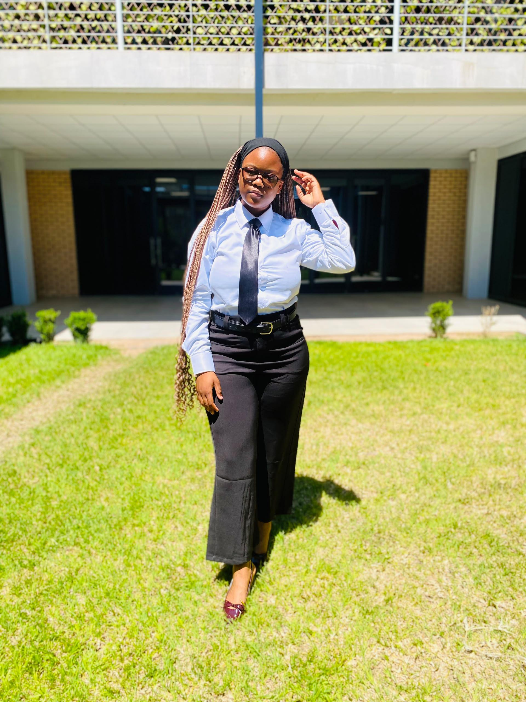

WELCOME TO MY WORLD ✦
Welcome to My
Digital Portfolio
Hello! My name is Lebopo Tlotlo Mmopi, a first-year student pursuing a Bachelor of Science in Business Intelligence and Data Analytics.
Explore my academic journey, personal growth, skills and professional aspirations as I prepare for exciting opportunities in the world of business and technology.
Explore My Portfolio
Get to Know Me ♡
I am a student developing my knowledge and skills in Business Intelligence and Data Analytics. My academic journey is helping me build a foundation in analytical thinking, communication, teamwork and problem-solving.
Through this portfolio, I share my learning experiences, academic reflections, projects and career preparation. It represents my progress as a student and my commitment to continuous personal and professional development.
Explore My Journey ✨
Academic Growth
Discover my learning experiences, reflections and progress throughout my studies.
Read More →Skills & Projects
Explore the skills I am developing and the projects that showcase my abilities.
View Projects →Career Goals
Learn about my professional preparation through my CV and application letter.
View My CV →